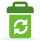
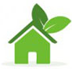
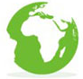

Если вы зашли на наш сайт:
- Значит вам небезразличны вопросы экологии, здоровья, сохранения нашей с вами среды обитания;
- Значит вы задумались о том, что вы можете сделать для улучшения экологической обстановки в нашей стране;
- Значит вы беспокоитесь о своем будущем и будущем своих детей.

Что куда сдавать

Как мы это делаем
Продвижение раздельного сбора и переработки отходов в регионах, а также сокращение неперерабатываемых отходов, просвещение широких слоев населения о важности участия общественности в решении “мусорной” проблемы.

Вдохновление
Польза раздельного сбора мусора очевидна. Такой подход уменьшает степень загрязнения воды, воздуха и земли. Вторичная переработка снижает количество потребляемой воды и величину городских свалок, экономит природные ресурсы Земли.

Позиция
Общественные экологические организации России объединили свои усилия и создали Альянс против сжигания и за переработку отходов на нижеизложенных принципах для информирования населения России об опасностях, которые несет применение мусоросжигательных технологий.